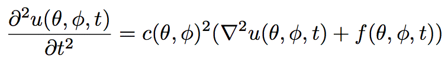
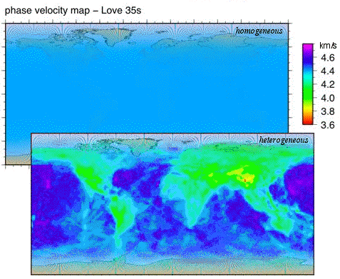
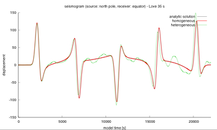

Membrane wave propagation
In fact, membrane waves were first introduced by Tanimoto (1990).
He shows that they are an analogue for surface waves, either Love or Rayleigh waves,
when we restrict ourselves to a narrow frequency band.
Here we look at waves on a sphere at their simplest form of propagation. That means there is no
dispersion. And no attenuation.
And well, no anisotropy. I'm sorry to show this formula now, but I just have to (only a tiny one).

This is all there is to solve. The phase velocity c depends only on the
location on the sphere, the displacement u of course also in time t and so
does the forcing term f (which we set to a really boring one).
So what? Call it a toy model. Realistic? No. Unless you consider a
slightly more realistic approach. What I mean by that, is that we can
put a phase velocity map on
our sphere.
phase velocity maps

These maps can be obtained for either Love or Rayleigh waves
and at certain distinct frequencies. The map here is derived by crustal
informations (rather than by inversion of phase anomalies) for Love
waves at a frequency of about 35 seconds. They have an area resolution
of 2ºx2º degree (you just ask Lapo for it. He's doing these and other great inversion maps).
heterogeneity

Now let us propagate the model waves on that. Dispersion isn't anymore
an option, since we're only looking at a predefined wave frequency. But
we can compare effects of heterogeneity with the homogeneous one (and draw some nice pictures as well).
Movie
A simulation of membrane waves propagating away from an artificial earthquake source located in
Crete, Greece. The simulation spans over the whole globe. The membrane waves hit a
strong slow-velocity scatterer at the Himalayan region. The simulation ends after the waves
reach again the source region.
references:
Peter, D., C. Tape, L. Boschi and J. H. Woodhouse, 2007.
Surface wave tomography: global membrane waves and adjoint methods
, Geophys. J. Int.,
171, 1098 - 1117.
Tanimoto, T., 1990. Modelling curved surface wave paths: membrane surface wave synthetics, Geophys. J.
Int., 102, 89-100.